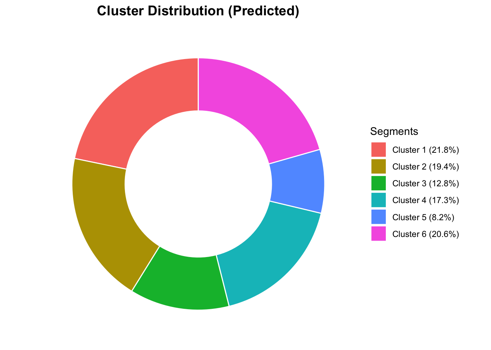
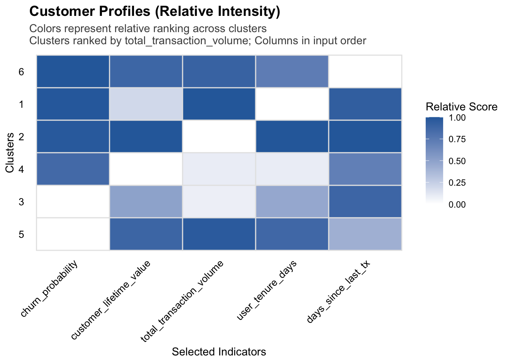
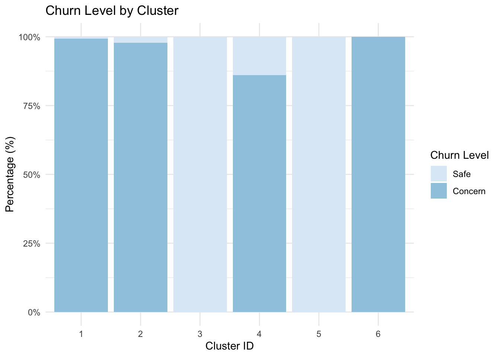
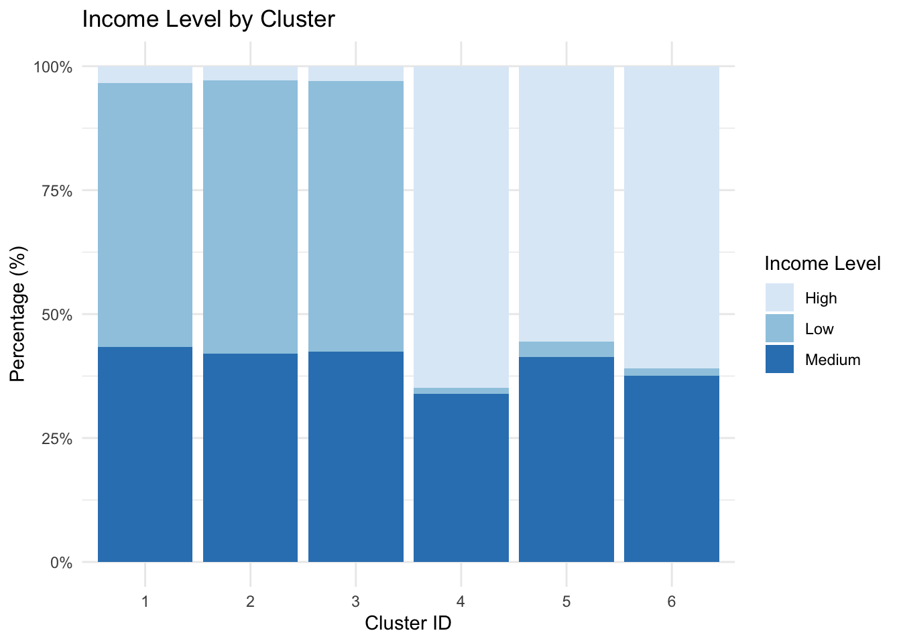

pacman::p_load(haven, tidyverse,
janitor, reshape2,
DT, kableExtra, lubridate, poLCA)TakeHomeExercise2
Overview
Introduction to Prototyping Module for Visual Analytics Shiny Application
Our project dives into the Latin American fintech to understand what drives customer behavior.
In this prototype, I’m using Latent Class Analysis (LCA) to group customers into meaningful personas based on customer behaviors. Users should be able to actively interact with the clustering model, like select their interested indicators or adjust the number of cluster groups to see how the customer segments shift. The goal is to let analysts explore their own assumptions about which customers are most loyal, valuable and which ones are on the verge of leaving the platform.
The Dataset
We’re using the COFINFAD dataset, which covers 48,723 customers from a major Colombian fintech firm. What makes this data special is that it combines information from different dimensions:
- Demographics: Basic profiles like age, income, and location.
- Product Usage: Which services they use, such as credit cards, loans, or insurance.
- Digital Engagement: How often they log in and which app features they use.
- Attitudinal Data: Rare metrics like NPS and satisfaction scores.
By using the customer_data.csv file, we have access to 57 variables per user. This allows our clustering model to look at a customer’s entire digital and financial footprint, helping us distinguish between different groups, like “power users” versus “casual spenders”.
Getting Started
Setting the Analytical Tools for Data Wrangling
We load the R packages using the pacman::p_load() function:
Data Wrangling
Data Source
The dataset used in the exercise is behavioral and transactional data retrieved from 48,723 customers of a Colombian fintech company, collected over 12 months from January 4, 2023, to December 29, 2023. The data is from COFINFAD: Colombian Fintech Financial Analytics Dataset
For this project, we are specifically using the customer_data.csv file, which aggregates 54 variables into a single record per user that’s proper for LCA clustering. The raw transactions_data.csv (transaction level logs) will not be used.
Import Data
First, we import customer_data.csv dataset as customer_raw_data.
customer_raw_data <- read_csv("data/customer_data.csv",show_col_types = FALSE)Summary of Data
Checking the data structure in the Environment, the customer_raw_data has 48723 rows of 54 variables in different data types.
Check Missing Values
We first need to check the missing values as poLCA is sensitive to missing values. By checking the missing values we can decide whether to use the data or just drop it.
library(tidyverse)
# Calculate count and percentage of NA values for each column
missing_summary <- customer_raw_data %>%
summarise(across(everything(), ~ sum(is.na(.)))) %>%
pivot_longer(everything(), names_to = "variable", values_to = "missing_count") %>%
mutate(missing_percentage = (missing_count / nrow(customer_raw_data)) * 100) %>%
arrange(desc(missing_count))
# Display variables with missing values
print(missing_summary)# A tibble: 54 × 3
variable missing_count missing_percentage
<chr> <int> <dbl>
1 complaint_topics 24346 50.0
2 credit_utilization_ratio 18263 37.5
3 feature_requests 16115 33.1
4 customer_id 0 0
5 age 0 0
6 gender 0 0
7 location 0 0
8 income_bracket 0 0
9 occupation 0 0
10 education_level 0 0
# ℹ 44 more rowsAs shown in result, complaint_topics, credit_utilization_ratio and feature_requests have quite high missing_percentage of 50%, 37.5% and 33.1%, we will remove these three variables together with customer_id which doesn’t help in clustering to ensure the stability and reliability of our analysis.
df_filtered <- customer_raw_data %>%
dplyr::select(
# Exclude variables with high missing_percentage
-complaint_topics,
-credit_utilization_ratio,
-feature_requests,
# Exclude identifiers that don't help in clustering
-customer_id,
everything()
)Narrow Down Variables
In this step, we narrow down our dataset to the most relevant variables for clustering. Inspired by the RFM (Recency, Frequency, Monetary) framework, we transform raw date columns into meaningful behavioral metrics to enhance the model’s interpretability:
- Tenure (Loyalty): Created
user_tenure_days(last vs. first transaction) to measure relationship length. - Recency (Activity): Created
days_since_last_txto separate active users from churned ones.
Key Filters Applied:
- Reduce Noise: Dropped
locationand granular demographics likemarital_statusoroccupationto keep the model focused on financial behavior. - Eliminate Redundancy: Removed values such as
tx_countandavg_tx_valueto prevent multicollinearity, keepingtotal_transaction_volumeto capture historical contribution,customer_lifetime_valueto account for future profitability,transaction_frequencyas a measure of user engagement. - Consolidate Sentiment: Used
satisfaction_scoreandnps_scoreas primary metrics, dropping detailed sub-scores likeapp_store_rating. - Avoid Bias: Removed
customer_tenureand other pre-existing predictions to ensure our LCA model discovers unbiased patterns.
library(lubridate) # Used for date manipulation
# Assume the study cutoff date as the final day of the dataset (2023-12-29)
study_cutoff_date <- as.Date("2023-12-29")
df_engineered <- df_filtered %>%
# Convert raw character strings into Date objects (format: DD/MM/YYYY)
mutate(across(c(first_tx, last_tx, last_transaction_date),
~ as.Date(., format = "%d/%m/%Y"))) %>%
# Calculate User Tenure (Loyalty)
mutate(user_tenure_days = as.numeric(last_tx - first_tx)) %>%
# Calculate Recency (Activity)
mutate(days_since_last_tx = as.numeric(study_cutoff_date - last_transaction_date)) %>%
# Select final variables and drop redundant columns
dplyr::select(
-marital_status, -occupation, -gender, -location, -average_transaction_value, -first_tx, -last_tx, -last_transaction_date, -first_transaction_date, -last_survey_date, -avg_daily_transactions, -total_tx_volume, -avg_tx_value, -tx_count, -monthly_transaction_count, -base_satisfaction, -tx_satisfaction, -product_satisfaction, -app_store_rating, -customer_tenure, -resolved_tickets_ratio, -support_tickets_count, -failed_transactions, -weekend_transaction_ratio, -complaint_topics, -credit_utilization_ratio, -feature_requests, -customer_id, -app_logins_frequency, -nps_score, -feedback_sentiment
)
# Verify the updated list of variables
colnames(df_engineered) [1] "age" "income_bracket"
[3] "education_level" "household_size"
[5] "acquisition_channel" "customer_segment"
[7] "savings_account" "credit_card"
[9] "personal_loan" "investment_account"
[11] "insurance_product" "active_products"
[13] "feature_usage_diversity" "bill_payment_user"
[15] "auto_savings_enabled" "international_transactions"
[17] "satisfaction_score" "clv_segment"
[19] "total_transaction_volume" "transaction_frequency"
[21] "preferred_transaction_type" "churn_probability"
[23] "customer_lifetime_value" "user_tenure_days"
[25] "days_since_last_tx" Check Data Types
We first need to evaluate the selected variables to understand their current formats and value ranges. This assessment ensures that our transformation logic accurately aligns with the data distribution and business context.
library(tidyverse)
# define the final 27 selected variables for cluster analysis
selected_vars <- c(
"age", "income_bracket", "education_level", "household_size",
"acquisition_channel", "customer_segment", "savings_account", "credit_card",
"personal_loan", "investment_account", "insurance_product", "active_products",
"feature_usage_diversity", "bill_payment_user", "auto_savings_enabled",
"international_transactions", "satisfaction_score", "churn_probability",
"clv_segment", "total_transaction_volume", "transaction_frequency", "preferred_transaction_type",
"customer_lifetime_value", "user_tenure_days", "days_since_last_tx"
)
# display data types, sample values, value range, unique count
df_inspection <- df_engineered %>%
dplyr::select(all_of(selected_vars)) %>%
map_df(~ tibble(
Data_Type = class(.x)[1],
Sample_Values = paste(head(unique(na.omit(.x)), 3), collapse = ", "),
Min = if(is.numeric(.x)) as.character(min(.x, na.omit = TRUE)) else "-",
Max = if(is.numeric(.x)) as.character(max(.x, na.omit = TRUE)) else "-",
Unique_Count = n_distinct(.x)
), .id = "Variable")
print(df_inspection, n = Inf)# A tibble: 25 × 6
Variable Data_Type Sample_Values Min Max Unique_Count
<chr> <chr> <chr> <chr> <chr> <int>
1 age numeric 44, 45, 59 1 60 6
2 income_bracket character Very High, Med… - - 4
3 education_level character Master, Bachel… - - 4
4 household_size numeric 5, 2, 4 1 13 13
5 acquisition_channel character Partnership, P… - - 4
6 customer_segment character occasional, re… - - 4
7 savings_account logical TRUE, FALSE - - 2
8 credit_card logical TRUE, FALSE - - 2
9 personal_loan logical FALSE, TRUE - - 2
10 investment_account logical FALSE, TRUE - - 2
11 insurance_product logical TRUE, FALSE - - 2
12 active_products numeric 1, 5, 3 1 5 5
13 feature_usage_diversity numeric 3, 0, 4 0 10 11
14 bill_payment_user logical FALSE, TRUE - - 2
15 auto_savings_enabled logical FALSE, TRUE - - 2
16 international_transactions numeric 1, 0, 3 0 6 7
17 satisfaction_score numeric 5, 3, 4 1 6 5
18 churn_probability numeric 0.362268822469… 0.11… 1 1977
19 clv_segment character Gold, Bronze, … - - 4
20 total_transaction_volume numeric 60540250, 2340… 1 1073… 48277
21 transaction_frequency numeric 0.030769230769… 0.02… 215.… 6365
22 preferred_transaction_type character Transfer, Paym… - - 4
23 customer_lifetime_value numeric 312414808.0287… 0 1776… 48723
24 user_tenure_days numeric 354, 318, 315 1 359 220
25 days_since_last_tx numeric 24, 11, 63 0 232 174Convert Data Types
To prepare for poLCA cluster analysis, the raw data was restructured into a categorical format optimized for behavioral segmentation. Also all features were coerced into positive integers (\(1, 2, 3...\)) then transferred to factors, and rows with missing values were removed, to meet the strict requirements of the poLCA algorithm.
- Custom Binning: High-variance metrics like total_transaction_volume and customer_lifetime_value were binned using fixed business thresholds (e.g., \(<100M\), \(100M-1B\), \(>1B\)) to better isolate “Whale” users from the mass market.
- Lifecycle Tiers: Engagement variables (transaction_frequency, days_since_last_tx, user_tenure_days) were grouped into stages (e.g., Active, At Risk, Loyal) to capture user stickiness.
- Fixed Mapping: Qualitative variables (acquisition_channel, customer_segment) were converted to factors with set levels to ensure consistent numeric encoding.
df_labeled <- df_engineered %>%
mutate(acquisition_channel = factor(acquisition_channel)) %>%
mutate(acquisition_channel = recode(acquisition_channel,
"Partnership" = "Indirect",
"Referral" = "Indirect")) %>%
mutate(customer_segment = recode(customer_segment,
"inactive" = "Low_Use",
"occasional" = "Low_Use",
"regular" = "Mid_Use",
"power" = "High_Use")) %>%
mutate(international_transactions = ifelse(international_transactions == 0, "None", "Has_International")) %>%
mutate(income_bracket = recode(income_bracket, "Very High" = "High")) %>%
mutate(education_level = recode(education_level,
"Master" = "Postgrad",
"PhD" = "Postgrad")) %>%
mutate(active_products = cut(active_products,
breaks = c(0, 2, Inf),
labels = c("Low_Holdings", "High_Holdings"))) %>%
mutate(satisfaction_score = cut(satisfaction_score,
breaks = c(0, 3, 5, Inf),
labels = c("Dissatisfied", "Neutral", "Satisfied"))) %>%
mutate(clv_segment = recode(clv_segment,
"Bronze" = "Standard",
"Silver" = "Standard",
"Gold" = "High_Value",
"Platinum" = "High_Value")) %>%
mutate(clv_segment = factor(clv_segment, levels = c("Standard", "High_Value"))) %>%
mutate(preferred_transaction_type = recode(preferred_transaction_type,
"Deposit" = "Inflow_Eco",
"Payment" = "Inflow_Eco",
"Transfer" = "Outflow_Transfer",
"Withdrawal" = "Outflow_Transfer")) %>%
mutate(preferred_transaction_type = factor(preferred_transaction_type,
levels = c("Inflow_Eco", "Outflow_Transfer"))) %>%
mutate(total_transaction_volume = cut(total_transaction_volume,
breaks = c(0, 100000000, 1000000000, Inf),
labels = c("Mass_Volume", "High_Volume", "Whale_Volume"),
include.lowest = TRUE)) %>%
mutate(customer_lifetime_value = cut(customer_lifetime_value,
breaks = c(-1, 50000000, 500000000, Inf),
labels = c("Low_CLV", "Mid_CLV", "High_CLV"))) %>%
mutate(transaction_frequency = cut(transaction_frequency,
breaks = c(0, 1, 10, Inf),
labels = c("Infrequent", "Regular", "Power_User"),
include.lowest = TRUE)) %>%
mutate(user_tenure_days = cut(user_tenure_days,
breaks = c(0, 90, 270, Inf),
labels = c("New_User", "Developing", "Loyal_User"),
include.lowest = TRUE)) %>%
mutate(days_since_last_tx = cut(days_since_last_tx,
breaks = c(-1, 7, 30, Inf),
labels = c("Active_Recent", "Warning_At_Risk", "Churned_Inactive"))) %>%
mutate(churn_probability = cut(churn_probability,
breaks = c(-Inf, 0.3, 0.7, Inf),
labels = c("Safe", "Concern", "High_Risk"))) %>%
mutate(across(c(savings_account, credit_card, personal_loan, investment_account,
insurance_product, bill_payment_user, auto_savings_enabled),
~ recode(as.numeric(.x), `1` = "Yes", `0` = "No"))) %>%
mutate(age = cut(age, breaks = c(0, 30, 50, Inf), labels = c("Young", "MiddleAge", "Senior"))) %>%
mutate(household_size = cut(household_size, breaks = c(0, 2, 5, Inf), labels = c("Small", "Medium", "Large"))) %>%
mutate(feature_diversity = cut(feature_usage_diversity, breaks = c(-Inf, 2, 6, Inf),
labels = c("Basic", "Intermediate", "Power"))) %>%
mutate(across(where(is.character), as.factor)) %>%
# Selection and Cleaning
dplyr::select(age, income_bracket, education_level, household_size, acquisition_channel,
customer_segment, savings_account, credit_card, personal_loan, investment_account,
insurance_product, active_products, feature_diversity,
bill_payment_user, auto_savings_enabled, international_transactions, satisfaction_score,
clv_segment, total_transaction_volume, churn_probability,
transaction_frequency, preferred_transaction_type, customer_lifetime_value,
user_tenure_days, days_since_last_tx) %>%
na.omit()
df_lca_final <- df_labeled %>%
mutate(across(everything(), ~ as.numeric(as.factor(.x))))
summary(df_lca_final) age income_bracket education_level household_size
Min. :1.000 Min. :1.0 Min. :1.000 Min. :1.000
1st Qu.:1.000 1st Qu.:1.0 1st Qu.:1.000 1st Qu.:1.000
Median :2.000 Median :2.0 Median :2.000 Median :2.000
Mean :2.003 Mean :2.1 Mean :1.797 Mean :1.818
3rd Qu.:3.000 3rd Qu.:3.0 3rd Qu.:2.000 3rd Qu.:2.000
Max. :3.000 Max. :3.0 Max. :3.000 Max. :3.000
acquisition_channel customer_segment savings_account credit_card
Min. :1.000 Min. :1.000 Min. :1.000 Min. :1.000
1st Qu.:1.000 1st Qu.:2.000 1st Qu.:2.000 1st Qu.:1.000
Median :2.000 Median :2.000 Median :2.000 Median :2.000
Mean :1.999 Mean :2.199 Mean :1.789 Mean :1.625
3rd Qu.:3.000 3rd Qu.:3.000 3rd Qu.:2.000 3rd Qu.:2.000
Max. :3.000 Max. :3.000 Max. :2.000 Max. :2.000
personal_loan investment_account insurance_product active_products
Min. :1.000 Min. :1.000 Min. :1.000 Min. :1.000
1st Qu.:1.000 1st Qu.:1.000 1st Qu.:1.000 1st Qu.:1.000
Median :1.000 Median :1.000 Median :1.000 Median :1.000
Mean :1.316 Mean :1.426 Mean :1.212 Mean :1.297
3rd Qu.:2.000 3rd Qu.:2.000 3rd Qu.:1.000 3rd Qu.:2.000
Max. :2.000 Max. :2.000 Max. :2.000 Max. :2.000
feature_diversity bill_payment_user auto_savings_enabled
Min. :1.00 Min. :1.000 Min. :1.000
1st Qu.:1.00 1st Qu.:1.000 1st Qu.:1.000
Median :1.00 Median :2.000 Median :1.000
Mean :1.45 Mean :1.701 Mean :1.401
3rd Qu.:2.00 3rd Qu.:2.000 3rd Qu.:2.000
Max. :3.00 Max. :2.000 Max. :2.000
international_transactions satisfaction_score clv_segment
Min. :1.00 Min. :1.00 Min. :1.0
1st Qu.:1.00 1st Qu.:2.00 1st Qu.:1.0
Median :2.00 Median :2.00 Median :1.0
Mean :1.61 Mean :1.91 Mean :1.5
3rd Qu.:2.00 3rd Qu.:2.00 3rd Qu.:2.0
Max. :2.00 Max. :3.00 Max. :2.0
total_transaction_volume churn_probability transaction_frequency
Min. :1.000 Min. :1.000 Min. :1.000
1st Qu.:1.000 1st Qu.:2.000 1st Qu.:1.000
Median :1.000 Median :2.000 Median :1.000
Mean :1.317 Mean :1.761 Mean :1.021
3rd Qu.:2.000 3rd Qu.:2.000 3rd Qu.:1.000
Max. :3.000 Max. :2.000 Max. :3.000
preferred_transaction_type customer_lifetime_value user_tenure_days
Min. :1.000 Min. :1.000 Min. :2.000
1st Qu.:2.000 1st Qu.:2.000 1st Qu.:3.000
Median :2.000 Median :2.000 Median :3.000
Mean :1.786 Mean :1.933 Mean :2.922
3rd Qu.:2.000 3rd Qu.:2.000 3rd Qu.:3.000
Max. :2.000 Max. :3.000 Max. :3.000
days_since_last_tx
Min. :1.000
1st Qu.:1.000
Median :2.000
Mean :1.762
3rd Qu.:2.000
Max. :3.000 cat("\nOriginal dataset size (Raw): ", nrow(df_engineered), "\n")
Original dataset size (Raw): 48723 cat("Processed dataset size (LCA Final): ", nrow(df_lca_final), "\n")Processed dataset size (LCA Final): 48723 Cluster Analysis
Latent Class Analysis
LCA is chosen because it is a probability-based method specifically designed for categorical data. While traditional methods like K-Means rely on physical distance between numerical points, LCA identifies hidden segments based on the likelihood of shared behavioral and demographic patterns. This makes it the most effective tool for our dataset, as it allows us to group customers into distinct, actionable categories that align with business logic.
library(poLCA)
f <- as.formula(cbind(age, income_bracket, education_level, household_size, acquisition_channel,
customer_segment, savings_account, credit_card, personal_loan,
investment_account, insurance_product, active_products,
feature_diversity, bill_payment_user,
auto_savings_enabled, international_transactions, satisfaction_score,
clv_segment, total_transaction_volume,
transaction_frequency, preferred_transaction_type,
customer_lifetime_value, user_tenure_days, days_since_last_tx, churn_probability) ~ 1)
set.seed(1234)
LCA_6 <- poLCA(f, data = df_lca_final, nclass = 6, nrep = 5, maxiter = 5000, verbose = FALSE)
print(LCA_6)Conditional item response (column) probabilities,
by outcome variable, for each class (row)
$age
Pr(1) Pr(2) Pr(3)
class 1: 0.4921 0.2813 0.2266
class 2: 0.4856 0.3041 0.2104
class 3: 0.5060 0.3792 0.1148
class 4: 0.1362 0.3483 0.5155
class 5: 0.1870 0.5131 0.2999
class 6: 0.1382 0.2974 0.5644
$income_bracket
Pr(1) Pr(2) Pr(3)
class 1: 0.0465 0.5257 0.4278
class 2: 0.0418 0.5337 0.4246
class 3: 0.0413 0.5384 0.4203
class 4: 0.6258 0.0240 0.3502
class 5: 0.5348 0.0501 0.4151
class 6: 0.6020 0.0271 0.3710
$education_level
Pr(1) Pr(2) Pr(3)
class 1: 0.3565 0.5821 0.0614
class 2: 0.3656 0.5768 0.0575
class 3: 0.3568 0.5817 0.0616
class 4: 0.4586 0.1662 0.3752
class 5: 0.4543 0.1767 0.3690
class 6: 0.4539 0.1917 0.3543
$household_size
Pr(1) Pr(2) Pr(3)
class 1: 0.2865 0.6018 0.1117
class 2: 0.2929 0.5988 0.1083
class 3: 0.2880 0.6055 0.1065
class 4: 0.2939 0.5982 0.1078
class 5: 0.2878 0.6113 0.1010
class 6: 0.2878 0.6054 0.1068
$acquisition_channel
Pr(1) Pr(2) Pr(3)
class 1: 0.3938 0.1999 0.4063
class 2: 0.4087 0.2011 0.3902
class 3: 0.3966 0.2048 0.3986
class 4: 0.4006 0.2053 0.3941
class 5: 0.4049 0.1901 0.4051
class 6: 0.3998 0.1976 0.4026
$customer_segment
Pr(1) Pr(2) Pr(3)
class 1: 0.0000 0.8412 0.1588
class 2: 0.2333 0.2876 0.4791
class 3: 0.0731 0.6638 0.2632
class 4: 0.0000 1.0000 0.0000
class 5: 0.1598 0.3999 0.4403
class 6: 0.1641 0.3330 0.5029
$savings_account
Pr(1) Pr(2)
class 1: 0.3851 0.6149
class 2: 0.3715 0.6285
class 3: 0.3907 0.6093
class 4: 0.0078 0.9922
class 5: 0.0265 0.9735
class 6: 0.0079 0.9921
$credit_card
Pr(1) Pr(2)
class 1: 0.5747 0.4253
class 2: 0.5636 0.4364
class 3: 0.5659 0.4341
class 4: 0.1432 0.8568
class 5: 0.1740 0.8260
class 6: 0.1430 0.8570
$personal_loan
Pr(1) Pr(2)
class 1: 0.7928 0.2072
class 2: 0.7896 0.2104
class 3: 0.7843 0.2157
class 4: 0.5685 0.4315
class 5: 0.5640 0.4360
class 6: 0.5524 0.4476
$investment_account
Pr(1) Pr(2)
class 1: 0.7138 0.2862
class 2: 0.7159 0.2841
class 3: 0.7096 0.2904
class 4: 0.4108 0.5892
class 5: 0.4268 0.5732
class 6: 0.4072 0.5928
$insurance_product
Pr(1) Pr(2)
class 1: 0.8667 0.1333
class 2: 0.8576 0.1424
class 3: 0.8553 0.1447
class 4: 0.7010 0.2990
class 5: 0.7082 0.2918
class 6: 0.7019 0.2981
$active_products
Pr(1) Pr(2)
class 1: 0.9225 0.0775
class 2: 0.9231 0.0769
class 3: 0.0191 0.9809
class 4: 0.7519 0.2481
class 5: 0.0666 0.9334
class 6: 0.8809 0.1191
$feature_diversity
Pr(1) Pr(2) Pr(3)
class 1: 0.7770 0.2221 0.0010
class 2: 0.7819 0.2174 0.0007
class 3: 0.7822 0.2173 0.0005
class 4: 0.3158 0.6508 0.0334
class 5: 0.3274 0.6377 0.0349
class 6: 0.3117 0.6533 0.0350
$bill_payment_user
Pr(1) Pr(2)
class 1: 0.3058 0.6942
class 2: 0.3018 0.6982
class 3: 0.2984 0.7016
class 4: 0.2978 0.7022
class 5: 0.2905 0.7095
class 6: 0.2922 0.7078
$auto_savings_enabled
Pr(1) Pr(2)
class 1: 0.5914 0.4086
class 2: 0.6148 0.3852
class 3: 0.5877 0.4123
class 4: 0.6002 0.3998
class 5: 0.6026 0.3974
class 6: 0.5966 0.4034
$international_transactions
Pr(1) Pr(2)
class 1: 0.3905 0.6095
class 2: 0.3905 0.6095
class 3: 0.3934 0.6066
class 4: 0.3907 0.6093
class 5: 0.3799 0.6201
class 6: 0.3883 0.6117
$satisfaction_score
Pr(1) Pr(2) Pr(3)
class 1: 0.1350 0.8631 0.0019
class 2: 0.0967 0.8994 0.0038
class 3: 0.0775 0.9179 0.0046
class 4: 0.0882 0.9077 0.0041
class 5: 0.0442 0.9467 0.0092
class 6: 0.0819 0.9123 0.0058
$clv_segment
Pr(1) Pr(2)
class 1: 0.9236 0.0764
class 2: 0.0145 0.9855
class 3: 0.5688 0.4312
class 4: 0.9438 0.0562
class 5: 0.2292 0.7708
class 6: 0.1708 0.8292
$total_transaction_volume
Pr(1) Pr(2) Pr(3)
class 1: 0.7039 0.2672 0.0289
class 2: 0.7171 0.2585 0.0244
class 3: 0.7143 0.2621 0.0236
class 4: 0.7151 0.2606 0.0243
class 5: 0.7015 0.2736 0.0249
class 6: 0.7059 0.2641 0.0299
$transaction_frequency
Pr(1) Pr(2) Pr(3)
class 1: 0.9783 0.0201 0.0016
class 2: 0.9818 0.0173 0.0009
class 3: 0.9834 0.0156 0.0010
class 4: 0.9815 0.0165 0.0019
class 5: 0.9820 0.0163 0.0017
class 6: 0.9794 0.0190 0.0016
$preferred_transaction_type
Pr(1) Pr(2)
class 1: 0.2146 0.7854
class 2: 0.2195 0.7805
class 3: 0.2175 0.7825
class 4: 0.2108 0.7892
class 5: 0.2059 0.7941
class 6: 0.2138 0.7862
$customer_lifetime_value
Pr(1) Pr(2) Pr(3)
class 1: 0.3573 0.6427 0.0000
class 2: 0.0002 0.6720 0.3278
class 3: 0.2226 0.6737 0.1037
class 4: 0.5500 0.4500 0.0000
class 5: 0.0087 0.7614 0.2299
class 6: 0.0001 0.7852 0.2147
$user_tenure_days
Pr(1) Pr(2) Pr(3)
class 1: 0 0.1059 0.8941
class 2: 0 0.0455 0.9545
class 3: 0 0.0797 0.9203
class 4: 0 0.1015 0.8985
class 5: 0 0.0577 0.9423
class 6: 0 0.0627 0.9373
$days_since_last_tx
Pr(1) Pr(2) Pr(3)
class 1: 0.4262 0.3780 0.1958
class 2: 0.4233 0.3804 0.1963
class 3: 0.4274 0.3800 0.1926
class 4: 0.4268 0.3815 0.1916
class 5: 0.4311 0.3784 0.1905
class 6: 0.4406 0.3758 0.1836
$churn_probability
Pr(1) Pr(2)
class 1: 0.0084 0.9916
class 2: 0.0237 0.9763
class 3: 1.0000 0.0000
class 4: 0.1586 0.8414
class 5: 1.0000 0.0000
class 6: 0.0000 1.0000
Estimated class population shares
0.2273 0.1855 0.1258 0.1713 0.08 0.2102
Predicted class memberships (by modal posterior prob.)
0.2176 0.1941 0.1276 0.1733 0.0816 0.2058
=========================================================
Fit for 6 latent classes:
=========================================================
number of observations: 48723
number of estimated parameters: 233
residual degrees of freedom: 48490
maximum log-likelihood: -802207.6
AIC(6): 1604881
BIC(6): 1606930
G^2(6): 554929.2 (Likelihood ratio/deviance statistic)
X^2(6): 5937697252 (Chi-square goodness of fit)
# --- Business Label Reference ---
lapply(df_labeled, levels)$age
[1] "Young" "MiddleAge" "Senior"
$income_bracket
[1] "High" "Low" "Medium"
$education_level
[1] "Bachelor" "High School" "Postgrad"
$household_size
[1] "Small" "Medium" "Large"
$acquisition_channel
[1] "Organic" "Paid Ad" "Indirect"
$customer_segment
[1] "High_Use" "Low_Use" "Mid_Use"
$savings_account
[1] "No" "Yes"
$credit_card
[1] "No" "Yes"
$personal_loan
[1] "No" "Yes"
$investment_account
[1] "No" "Yes"
$insurance_product
[1] "No" "Yes"
$active_products
[1] "Low_Holdings" "High_Holdings"
$feature_diversity
[1] "Basic" "Intermediate" "Power"
$bill_payment_user
[1] "No" "Yes"
$auto_savings_enabled
[1] "No" "Yes"
$international_transactions
[1] "Has_International" "None"
$satisfaction_score
[1] "Dissatisfied" "Neutral" "Satisfied"
$clv_segment
[1] "Standard" "High_Value"
$total_transaction_volume
[1] "Mass_Volume" "High_Volume" "Whale_Volume"
$churn_probability
[1] "Safe" "Concern" "High_Risk"
$transaction_frequency
[1] "Infrequent" "Regular" "Power_User"
$preferred_transaction_type
[1] "Inflow_Eco" "Outflow_Transfer"
$customer_lifetime_value
[1] "Low_CLV" "Mid_CLV" "High_CLV"
$user_tenure_days
[1] "New_User" "Developing" "Loyal_User"
$days_since_last_tx
[1] "Active_Recent" "Warning_At_Risk" "Churned_Inactive"Predicted cluster distribution
This section visualizes the relative size of each identified customer groups.
library(ggplot2)
library(dplyr)
library(scales)
df_labeled$cluster <- as.factor(LCA_6$predclass)
counts <- table(df_labeled$cluster)
prop_data <- data.frame(
ID = names(counts),
Value = as.numeric(counts),
stringsAsFactors = FALSE
)
prop_data$Percentage <- prop_data$Value / sum(prop_data$Value)
prop_data$Legend_Label <- paste0(
"Cluster ", prop_data$ID,
" (", scales::percent(prop_data$Percentage, accuracy = 0.1), ")"
)
library(ggplot2)
ggplot(prop_data, aes(x = 2, y = Percentage, fill = ID)) +
geom_bar(stat = "identity", width = 0.8, color = "white") +
coord_polar(theta = "y", start = 0) +
xlim(0.5, 2.5) +
scale_fill_discrete(labels = prop_data$Legend_Label) +
theme_void() +
theme(
legend.position = "right",
plot.title = element_text(hjust = 0.5, face = "bold", size = 14)
) +
labs(
title = "Cluster Distribution (Predicted)",
fill = "Segments"
)
Assess AIC, BIC, Entropy
To ensure the statistical validity of the model, we assess key metrics AIC, BIC, and Entropy.
AIC & BIC (Information Criteria): These metrics evaluate the balance between model fit and complexity. Lower values generally indicate a more optimal model that explains the data well without overfitting.
Entropy: This measures classification precision. It indicates how distinctly the model separates individuals into clusters. Values range from 0 to 1, where higher score represents high certainty and minimal overlap between groups.
calculate_entropy <- function(model) {
error_prior <- -sum(model$P * log(model$P))
entropy_obs <- function(p) {
p <- p[p > 0]
return(-sum(p * log(p)))
}
error_post <- mean(apply(model$posterior, 1, entropy_obs))
lca_entropy <- (error_prior - error_post) / error_prior
return(lca_entropy)
}
entropy_val <- calculate_entropy(LCA_6)
cat("AIC:", LCA_6$aic, " | BIC:", LCA_6$bic, " | Entropy:", entropy_val, "\n")AIC: 1604881 | BIC: 1606930 | Entropy: 0.8248245 Customer Profile Visualization
To interpret and visualize the different classes of the LCA model, we come out with heat map and stacked bar chart to map cluster assignments against behavioral and demographic indicators.
Feature Intensity Heatmap
The heatmap provides a visual comparison of how each cluster performs across key metrics.
- Logic: To compare clusters, we convert categorical labels into numerical ranks and calculate the mean “level” for each group. Because these raw averages often fall into narrow ranges, subtle differences can be difficult to see on a standard scale. We apply 0-1 scaling to magnify the relative performance and highlights the difference.
- Layout: The X-axis follows the order of selected variables (priority indicators), while the Y-axis (Clusters) is sorted by a selected metric, such as churn_probability, to create a clear value-based hierarchy.
- Interpretation: Darker blue represents a higher concentration of “top-tier” traits, such as higher spending, longer tenure, or greater satisfaction.
# ==============================================================================
# Heatmap
# ==============================================================================
library(ggplot2)
library(dplyr)
library(tidyr)
library(plotly) # used for plotting charts
library(scales) # used for percentage presentation
# map the Cluster IDs back to the descriptive dataset (df_labeled)
df_labeled$cluster <- factor(LCA_6$predclass)
# select your interested indicators
# X-axis order: display order consistent with input order, with most interested ones on the left
selected_vars <- c("churn_probability", "customer_lifetime_value",
"total_transaction_volume", "user_tenure_days", "days_since_last_tx")
# calculate average value, then rescale value to [0,1] to show group difference
heatmap_data <- df_labeled %>%
group_by(cluster) %>%
summarise(across(all_of(selected_vars),
~ mean(as.numeric(as.factor(.x)), na.rm = TRUE))) %>%
mutate(across(-cluster, ~ as.vector(scales::rescale(.)))) %>% # rescale
pivot_longer(-cluster, names_to = "Variable", values_to = "Intensity")
# Y-axis order: user can select to sort classes based on most care indicator, here we take churn_probability as example
cluster_order <- heatmap_data %>%
filter(Variable == "churn_probability") %>%
arrange(desc(Intensity)) %>%
pull(cluster)
# apply heat map with selected X-axis, Y-axis order
heatmap_data <- heatmap_data %>%
mutate(
Variable = factor(Variable, levels = selected_vars),
cluster = factor(cluster, levels = rev(cluster_order))
)
# draw heat map
ggplot(heatmap_data, aes(x = Variable, y = cluster, fill = Intensity)) +
geom_tile(color = "gray90", linewidth = 0.5) +
scale_fill_gradient(low = "white", high = "#2C6BAA") +
labs(title = "Customer Profiles (Relative Intensity)",
subtitle = "Colors represent relative ranking across clusters\nClusters ranked by total_transaction_volume; Columns in input order",
x = "Selected Indicators",
y = "Clusters",
fill = "Relative Score") +
theme_minimal() +
theme(
axis.text.x = element_text(angle = 45, hjust = 1, color = "black", size = 10),
axis.text.y = element_text(color = "black", size = 10),
panel.grid = element_blank(),
plot.title = element_text(face = "bold", size = 14),
plot.subtitle = element_text(size = 11, color = "gray30")
)
Segment Composition Bar Chart
To examine the internal distribution of specific variables, we used 100% stacked bar charts.
- Logic: A custom R function generates distributions for any selected variable (e.g., NPS or Income), identifying the exact proportions of customer types within each segment.
# ==============================================================================
# Stacked Bar Chart
# ==============================================================================
# Create a function to enable user to pass in any interested indicator to distribution among classes
plot_cluster_composition <- function(data, target_var, title_name) {
p <- ggplot(data, aes(x = cluster, fill = !!sym(target_var))) +
geom_bar(position = "fill") +
scale_y_continuous(labels = percent) +
scale_fill_brewer(palette = "Blues") +
labs(title = paste(title_name, "by Cluster"),
x = "Cluster ID",
y = "Percentage (%)",
fill = title_name) +
theme_minimal()
return(p)
}
# Example 1：check nps_score
p_nps <- plot_cluster_composition(df_labeled, "churn_probability", "Churn Level")
print(p_nps)
# Example 2：check income_bracket
p_income <- plot_cluster_composition(df_labeled, "income_bracket", "Income Level")
print(p_income)
# ------------------------------------------------------------------------------
# Interactive Plotly
# ------------------------------------------------------------------------------
ggplotly(p_nps)